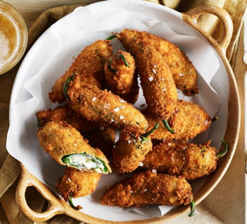

Jalapeno Poppers

| Ingredients |
Method |
| 12 jalapeno chillies (we used jalapeno but other mild green chillies would work) |
Take one whole chilli and using a small sharp knife make an incision along the length without cutting all the way through. Open up the cavity and using the end of a teaspoon scrape out and discard the seeds and the membrane. It’s very good idea to wear gloves when you’re preparing chillies in this way, and make sure you wash your hands thoroughly afterwards. Repeat with all the other chillies. |
| 150g full-fat cream cheese |
Mix the cream cheese with the mozzarella, season with salt and pepper then use it to fill the chillies. Push them gently to close them up and wipe off any excess. |
| 50g grated mozzarella |
Put the flour, egg and breadcrumbs in separate shallow bowls or dishes and roll the stuffed chillies first in the flour then egg then breadcrumbs then repeat so they get a good double coating. |
| 30g plain flour |
Heat the oil in a large saucepan until it reaches 160C. Carefully lower the chillies into the oil using a slotted spoon and deep fry in batches for around 2-3 mins or until deep golden brown. Transfer to a plate lined with kitchen paper to soak up the excess oil. |
| 2 large eggs
, lightly beaten
|
Once the chillies are fried season them with pepper and salt and spread out on a plate or board so everyone can help themselves. Great with beer and a movie. |
| 100g fresh breadcrumbs |
|
| oil for deep frying |
|
| To serve lime
wedges (optional) |
|
Lasagna

| Ingredients |
Prep |
| 1 cup extra virgin olive oil |
Step 1: For the sauce, heat 1/2 cup oil in a large heavy Dutch oven or kettle over low heat. Add the onions, minced garlic and pancetta, and cook, stirring, for 10 minutes, until the onions are wilted. Season liberally with salt and pepper. Raise heat slightly, add the wine and cook until it is mostly reduced, about 20 minutes. Crush the tomatoes into the pan, and add their juice. Add the tomato paste and 2 cups lukewarm water. Simmer for 1 hour.
|
| 2 medium red onions, finely diced |
Step 2: Mix the cream cheese with the mozzarella, season with salt and pepper then use it to fill the chillies. Push them gently to close them up and wipe off any excess. |
| 2 large cloves minced garlic |
Step 3: Heat the remaining oil in a large skillet over medium-high heat. Dust the meatballs lightly with flour, shaking off excess, and lay into the hot oil. Brown the meatballs on all sides (do not cook through) and transfer to the sauce.
|
| 8 ounces pancetta, diced |
Step 4: In a clean skillet, brown the sausages over medium-high heat. Transfer to the sauce. Simmer 1 1/2 hours. |
| Salt and freshly ground black pepper |
Step 5: Heat the oven to 350 degrees. In a large bowl, combine the ricotta, eggs, pecorino Romano, parsley and all but 1 cup of the mozzarella. Season well with salt and pepper. Mix thoroughly. |
| 1 ½ cups good red wine, preferably Italian |
Step 6: Remove the meatballs and sausage from the sauce, and set aside to cool slightly, then chop coarsely. Spoon a thick layer of sauce into the bottom of a 9-by-12-inch lasagna pan. Cover with a layer of noodles. Spoon more sauce on top, then add a third of the meat and a third of the cheese mixture. Repeat for 2 more layers, using all the meat and cheese. Top with a layer of noodles, and cover with the remaining sauce. Sprinkle reserved mozzarella evenly over the top. Bake 30 minutes. Let stand 10 minutes before serving. |
| 2 28-ounce cans Italian plum tomatoes |
|
| 3 tablespoons tomato paste |
|
| ¾ pound ground sirloin |
|
| ¼ cup freshly grated pecorino Romano |
|
| 2 eggs |
|
| 10 sprigs fresh parsley, leaves only, washed and dried |
|
| 2 large whole cloves garlic |
|
| ½ cup flour |
|
| 1 pound Italian sausage, a mix of hot and sweet |
|
| FOR THE LASAGNA: |
|
| 1 15-ounce container ricotta cheese |
|
| 2 extra-large eggs |
|
| 2 cups freshly grated pecorino Romano |
|
| ½ cup chopped parsley |
|
| 1 pound mozzarella, grated |
|
| 16 sheets fresh lasagna noodles, preferably Antica Pasteria |
|